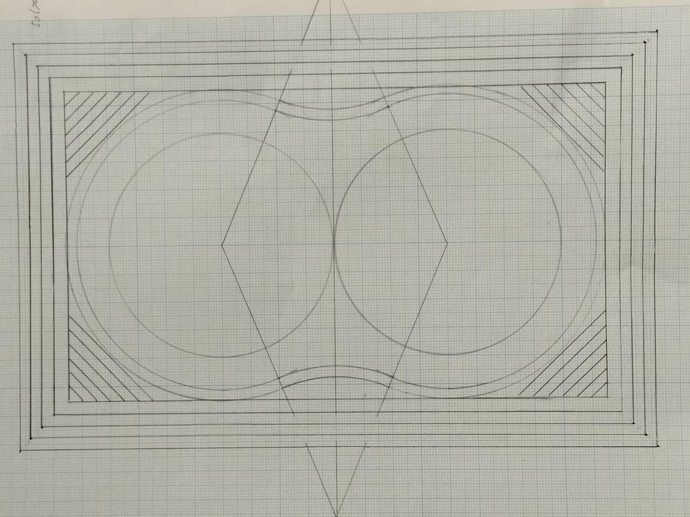
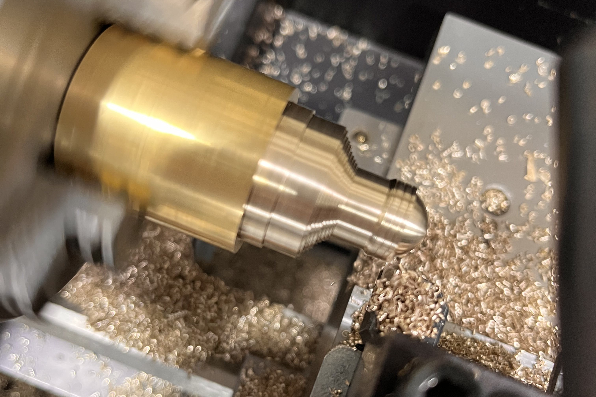

どんなことを学ぶか
基盤コースでは、将来の社会で活躍するために必要な「考える力」「表現する力」「協力する力」をバランスよく育てることを大切にしています。中でも、エネルギー問題や環境問題といった現代社会の大きな課題に立ち向かうため、私たちは機械工学の基本から応用まで幅広く学んでいます。
授業では、輸送機械（自動車・電車・飛行機など）や発電設備の設計や運転技術について学びます。さらに、水素エネルギーや風力・水力といった再生可能エネルギーに関する最新技術、また環境を守るための自然再生のしくみや、微生物の働きを利用した浄化技術なども実習を通して学んでいます。
そのほかにも、自然災害の被害を減らすための予測システムや、未来の暮らしを支える新しい食品・医薬品・化粧品などを開発するための製造技術についても知識を深めています。
こうした学びは、ただ知識を増やすだけではなく、実際に手を動かして試行錯誤する中で、現実に役立つ技術や考え方を身につけていくものです。大阪高専が大切にしている「進取・実践・共生」の考え方に基づき、私たちは自分で考え、仲間と協力しながら、未知の課題にも前向きに取り組んでいます。
・「進取」… 新しいアイデアや技術に自らチャレンジする姿勢
・「実践」… 学んだ知識を現場で活かして成果を出す力
・「共生」… 多様な人と協力しながらよりよい成果を目指す心構え
主な学びの内容
- 探究活動：金属を削って加工する「旋盤」や「フライス盤」の実習、機械の構造を学ぶ機械工学概論、コンピュータ上で部品を描くCAD製図などを学びます。
- 情報活用：Pythonなどのプログラミング言語を使った制御技術、CAD設計ソフトでの製品モデリング、ITを活用したものづくりに挑戦しています。
- 共同学習：グループで課題に取り組みながら、お互いに意見を出し合い、実験結果をまとめて発表することで、協力する力や伝える力を高めます。
- 環境技術：再生可能エネルギーの発電方法や、環境負荷を減らすための技術を学び、「地球にやさしい技術とは何か」を考えます。
- 未来のものづくり：3DプリンタやCNC（コンピュータ制御加工機）を使い、自分で設計したものを実際に形にする体験を通して、創造力と実現力を伸ばします。
- 社会とのつながり：地元企業との連携プロジェクトやインターンシップ、研究発表会など、社会とつながる学びの場も多く、実践力が磨かれます。
作業の様子
下の画像は実際に金属を加工する工程を示した製図です。設計図を見ながら、どんな順番で削っていくか、どこをどのように加工するかをしっかりと考えます。
こちらは、実際に金属を加工しているときの写真です。大きな音や熱を伴う作業の中で、細かい操作や安全確認がとても重要であることを学びました。
学んで感じたこと
私はMコースに入る前は、機械工学というと「職人の世界」や「機械をガチャガチャいじる」といったイメージが強く、パソコンやITとは関係のない分野だと思っていました。
しかし実際に学んでみると、自分でプログラムを書いて加工機を制御したり、CADを使って建築構造物を設計したりと、ITと融合した高度な技術がたくさんあることに驚きました。手を動かすだけでなく、頭で考えて組み合わせることの面白さを知ることができました。
さらに、チームで課題に取り組む中で、自分にはないアイデアや考え方に出会い、「一人ではできないことも、仲間となら実現できる」という実感を持つようになりました。知識や技術を身につけるだけでなく、人と関わる力も自然と育まれるコースだと感じています。
これからも、実験や課題研究などを通して、未来の社会に貢献できる力を少しずつ身につけていきたいです。